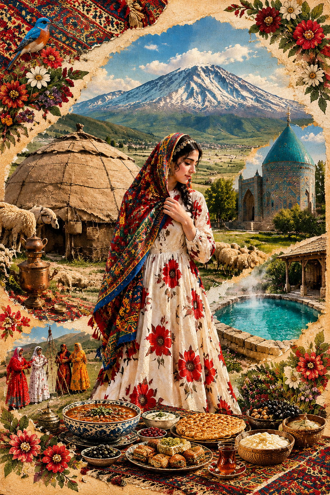
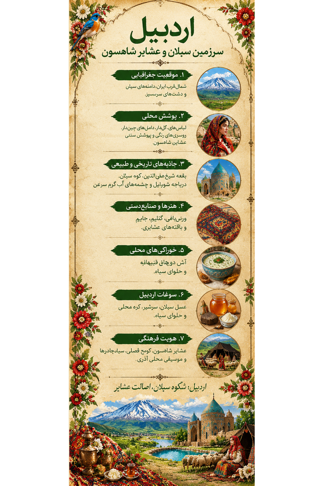

۱. تصویر اردبیل؛ روایت یک سرزمین1. Ardabil in Art: A Land's Story
در این اثر، پوشش الهامگرفته از زنان شاهسون با چشمانداز سبلان، آلاچیق عشایری، گلهها، بافتههای رنگارنگ و معماری تاریخی اردبیل همراه شده است. رنگها و نقشها، پیوند میان زندگی، طبیعت و میراث فرهنگی را روایت میکنند.This artwork brings together dress inspired by Shahsevan women, the Sabalan landscape, nomadic tents, flocks, colorful textiles and Ardabil's historic architecture. Its colors and patterns tell a story of life, nature and cultural heritage.

اثر هنری اردبیل از مجموعه «ایران، هزار رنگ»The Ardabil artwork from “Iran, A Thousand Colors”
این تصویر بازآفرینی هنری مجموعه است؛ توضیحات این صفحه برای معرفی فرهنگی و تاریخی منطقه ارائه شدهاند.This image is an artistic interpretation created for the collection. The text provides cultural and historical context about the region.
۲. پوشش زنان شاهسون؛ رنگ، لایه و هویت2. Shahsevan Women's Dress: Color, Layers and Identity
پوشش سنتی زنان شاهسون یکدست و ثابت نبوده است. نوع لباس، رنگ، جنس پارچه و تعداد لایهها میتوانسته با فصل، سن، موقعیت اجتماعی و مناسبتهایی مانند جشن و عزا تغییر کند. از همین رو، پوشش زنان شاهسون را باید با توجه به تنوع تاریخی و محلی آن شناخت.Traditional Shahsevan women's dress has not been uniform or unchanging. Garment types, colors, fabrics and layers could vary by season, age, social context and occasions such as celebrations and mourning. This diversity is essential to understanding the tradition.

لیبل اختصاصی اردبیل؛ راهنمای تصویری پوشش و فرهنگ منطقهArdabil exhibition label: a visual guide to regional dress and culture
نامهای محلی اجزای پوششLocal Names for Garments
در گزارش مهر درباره پوشش بومی اردبیل، نامهایی مانند «کوینگ» برای پیراهن، «تومان» برای دامن، «یایلیق» برای روسری، «آلینیایلیقی» برای چارقد روی روسری، «آرخچن» برای عرقچین، «یِل» برای نیمتنه زمستانی و «جلقا» برای جلیقه ثبت شدهاند. املای این واژهها ممکن است در منابع و گویشهای محلی تفاوت داشته باشد.A Mehr News report on Ardabil's traditional dress records terms such as “kuving” for a dress, “toman” for a skirt, “yayliq” for a headscarf, “alin-yayliqi” for an additional head covering, “arkhchin” for a cap, “yel” for a winter garment and “jelqa” for a vest. Spellings may vary across local dialects and sources.
پوشاک و زندگی عشایریDress and Nomadic Life
پوشش، با شیوه زندگی و شرایط آبوهوایی پیوند داشته است. زندگی عشایری شاهسون با دامداری و کوچ فصلی شناخته میشود، اما امروزه همه خانوادههای شاهسون کوچنشین نیستند و شیوههای زندگی متفاوتی دارند.Clothing has been connected to lifestyle and climate. Shahsevan culture is associated with pastoralism and seasonal migration, but today not all Shahsevan families are nomadic, and ways of life vary.
۳. شهرها و نواحی اردبیل3. Cities and Regions of Ardabil
استان اردبیل از شهرها، دشتها، نواحی کوهستانی و روستاهای گوناگون تشکیل شده است. هر ناحیه با طبیعت، محصولات، معماری و روایتهای محلی خود شناخته میشود.Ardabil Province includes cities, plains, mountain areas and diverse villages. Each area has its own landscapes, products, architecture and local stories.
اردبیلArdabil
مرکز استان و محل مجموعه تاریخی شیخ صفیالدین اردبیلی؛ شهری با پیشینه فرهنگی و معماری ارزشمند.The provincial capital, home to the Sheikh Safi al-Din Ardabili complex and a rich architectural heritage.
دشت مغانMughan Plain
دشتی گسترده در شمال استان که در روایتهای مربوط به دامداری و کوچ فصلی عشایر شاهسون جایگاه دارد.A broad plain in the north of the province, important in accounts of Shahsevan pastoralism and seasonal migration.
مشگینشهرMeshgin Shahr
ناحیهای در نزدیکی سبلان با چشماندازهای کوهستانی، آثار تاریخی و جاذبههای طبیعی.An area near Sabalan known for mountain landscapes, historic remains and natural attractions.
سرعینSareyn
شهری شناختهشده بهخاطر چشمههای آب گرم و گردشگری طبیعی.A town known for its hot springs and nature tourism.
خلخالKhalkhal
ناحیهای با جادههای کوهستانی، جنگلها و چشماندازهای متنوع.An area with mountain roads, forests and varied landscapes.
نمینNamin
ناحیهای در شرق استان با طبیعت سرسبز و پیوندهای فرهنگی محلی.An area in the east of the province with green landscapes and local cultural traditions.
این فهرست، چند نمونه از نواحی استان را معرفی میکند؛ نام روستاها و نسبتدادن پوشش مشخص به هر روستا نیازمند بررسی منابع محلی است.This list presents selected areas of the province. Village-level clothing attributions require local sources and verification.
۴. تاریخ، معماری و طبیعت4. History, Architecture and Nature
مجموعه شیخ صفیالدین اردبیلیSheikh Safi al-Din Ardabili Complex
مجموعهای تاریخی و معماری در اردبیل که از مهمترین یادگارهای فرهنگی شهر به شمار میرود.A historic architectural complex and one of Ardabil's important cultural landmarks.
کوه سبلانMount Sabalan
کوهی آتشفشانی با چشماندازهای کوهستانی و قلهای برفپوش در بخشهایی از سال.A volcanic mountain with dramatic highland scenery and a snow-covered summit during parts of the year.
دریاچه شورابیلShorabil Lake
دریاچهای در محدوده شهر اردبیل که از فضاهای شناختهشده طبیعی و تفریحی منطقه است.A lake within Ardabil city, known as a local natural and recreational area.
چشمههای آب گرم سرعینSareyn Hot Springs
چشمههای آب گرم از جاذبههای شناختهشده سرعین و بخشی از هویت گردشگری استان هستند.The hot springs are among Sareyn's best-known attractions and part of the province's tourism identity.
۵. خوراک و شیرینیهای محلی5. Local Food and Sweets
خوراک اردبیل از آبوهوا، محصولات لبنی، غلات و سنتهای خانوادگی تأثیر گرفته است. دستورها و شیوههای تهیه میتوانند از شهری به شهر دیگر و از خانوادهای به خانواده دیگر متفاوت باشند.Ardabil's food culture is shaped by its climate, dairy products, grains and family traditions. Recipes and preparation methods may differ between towns and households.
آش دوغDoogh Ash
آشی تهیهشده با دوغ که از خوراکهای شناختهشده اردبیل و بخشهایی از آذربایجان است.A yogurt-based soup known in Ardabil and other parts of Azerbaijan.
قیقاناقQeyqanagh
خوراکی شیرین که در برخی خانوادهها برای صبحانه یا میانوعده تهیه میشود.A sweet dish prepared in some households for breakfast or a snack.
حلوای سیاهBlack Halva
از شیرینیهای مشهور اردبیل که با بافت و رنگ تیره شناخته میشود.A famous Ardabil sweet known for its dark color and distinctive texture.
لبنیات محلیLocal Dairy
سرشیر، کره محلی و دیگر فرآوردههای لبنی در خوراک و مهماننوازی منطقه جایگاه دارند.Clotted cream, local butter and other dairy products play a role in regional food and hospitality.
۶. محصولات محلی و صنایعدستی6. Local Products and Handicrafts
ورنیبافیVerni Weaving
ورنی از بافتههای شناختهشده عشایری منطقه است و نقشهای آن بخشی از میراث هنری بافندگان را بازتاب میدهد.Verni is a well-known nomadic flatweave whose patterns reflect the artistic heritage of local weavers.
گلیم و جاجیمKilim and Jajim
بافتههایی کاربردی و تزئینی که با رنگها و طرحهای متنوع تولید میشوند.Practical and decorative textiles produced in a variety of colors and patterns.
عسل سبلانSabalan Honey
عسل از محصولات شناختهشده استان است که با پوشش گیاهی و طبیعت کوهستانی منطقه پیوند دارد.Honey is a well-known regional product connected to the area's mountain flora and landscape.
فرآوردههای لبنیDairy Products
سرشیر و کره محلی از محصولات خوراکی شناختهشده اردبیل هستند.Clotted cream and local butter are among Ardabil's recognized food products.
۷. منابع و مطالعه بیشتر7. Sources and Further Reading
منابع زیر برای آشنایی بیشتر با فرهنگ شاهسون، پوشش بومی، تاریخ و صنایعدستی اردبیل انتخاب شدهاند.The following resources offer further reading on Shahsevan culture, traditional dress, history and handicrafts in Ardabil.
- Encyclopaedia Iranica — Shahsevan
- مهر نیوز — کلاه وارداتی بر سر فرهنگ اصیل؛ لباس بومی اردبیل
- ایرنا — آلاچیق عشایر اردبیل
- علیبابا — جاذبههای تاریخی اردبیل
- اتاقک — سوغات و صنایعدستی اردبیل
- علیبابا — غذاهای سنتی اردبیل
نامهای محلی لباس ممکن است در گویشها و منابع مختلف با املای متفاوت ثبت شده باشند. برای نسبت دادن یک پوشش مشخص به روستایی خاص، بررسی منابع تخصصی و مستندات محلی ضروری است.Local garment names may be spelled differently across dialects and sources. Specific village-level clothing attributions require specialist research and local documentation.